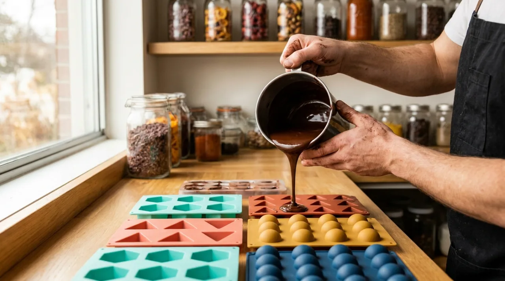

A
顏色先行
開發任何新品前，我們先決定它的顏色，再回頭尋找能撐起這個顏色的風味與產地。
彩可 CHROMA COCOA 的一切，都從一張色票開始。
2021 年，創辦人在一場品鑑會上吃到一塊技術完美、卻安靜得令人想睡的黑巧克力。她想：為什麼精品巧克力總是棕色的、嚴肅的？風味明明這麼喧鬧。
於是彩可誕生了。我們把每一種風味翻譯成顏色，再把顏色做成巧克力。覆盆莓是電光洋紅，血橙是晴日黃，薄荷是次元綠——色票就是我們的食譜起點。

開發任何新品前，我們先決定它的顏色，再回頭尋找能撐起這個顏色的風味與產地。
只用可追溯的單一莊園可可豆，讓每支巧克力都有清楚的風味身世。
無論多講究，最後都要好吃到讓人笑出來。技術服務於快樂，不是相反。
創辦人 · 風味總監
首席巧克力師
烘豆與品管